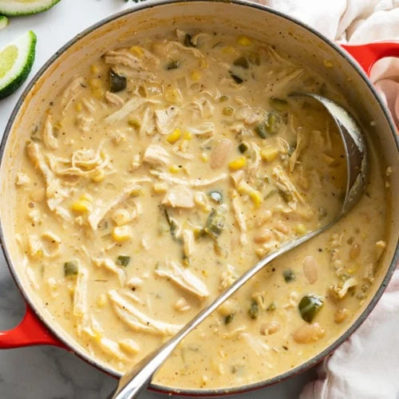

White Chicken Chili

Description
This recipe is great on game day to feed a crowd. The slight spice level will help to keep your guests warm, while being easily adjustable in the recipe.
Ingredients
- Pulled rotisserie chicken (1 lb)
- Green chiles (7 oz can)
- Great northern beans - low sodium (2x 15oz cans)
- Olive oil (2 tbsp)
- Yellow onion - chopped (1 medium)
- Green pepper - chopped (1 medium, no seeds)
Steps
- Add olive oil to a large pot over medium-high heat
- Add chopped onion and green pepper and cook for 4-5 minutes
- Add minced and cook for another minute